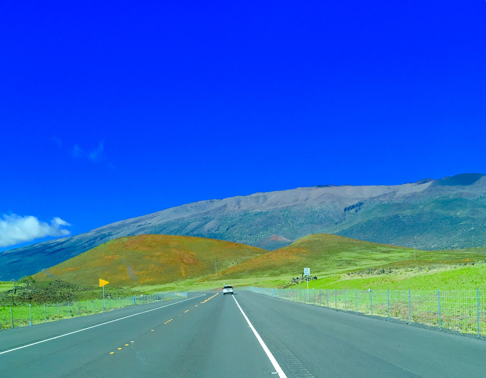
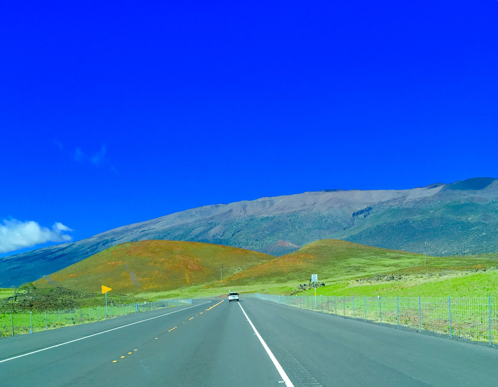

Chiang Mai, Thailand

About Chiang Mai
Chiang Mai, nestled in the lush hills of northern Thailand, is a
city that captivates with its unique blend of cultural richness and
natural beauty. Situated approximately 700 kilometers north of
Bangkok, Chiang Mai is the largest city in the region and serves as
the capital of the province of the same name. Its geographical
location is nothing short of enchanting, surrounded by forested
mountains and picturesque landscapes. This charming city, often
referred to as the "Rose of the North," offers visitors a delightful
escape from the bustling urban life, inviting them to explore a
realm where tradition meets modernity amidst a backdrop of stunning
scenery.
The heart of Chiang Mai beats with a rich history that dates back
over 700 years. Founded in 1296, the city was originally the capital
of the ancient Lanna Kingdom. Today, remnants of its storied past
are scattered throughout the city, from the ancient temples that dot
the landscape to the preserved city walls and moats that harken back
to a bygone era. Among the city's treasures is the revered Wat Phra
Singh, a 14th-century temple known for its intricate architecture
and revered Buddha image. Chiang Mai's historical sites provide a
captivating glimpse into its heritage, making it a destination that
seamlessly weaves together the past and present for visitors to
explore and appreciate
Photo Journal


Hawaii, United States

About Hawaii
Welcome to Hawaii, the Aloha state. Hawaii is comprised of a chain
of 132 islands. We usually think of the eight main islands when we
think of Hawaii. This is not surprising as the other 124 islands
only total about 3 square miles in land area.
Hawaii is home of the world's most active volcano, the crater of
Kilauea on Mauna Loa. Sandy beaches, towering volcanoes, and lush
valleys lure thousands of tourists each year to this tropical
paradise.
Photo Journal

 



London, England

About London
As one of the most iconic cities in the world, London carries a rich
history that is matched by its continuous growth and evolution. A
powerhouse of culture, politics, and finance, it stands as a city
where the past and present exist harmoniously side by side.
From the ancient towers that narrate tales of a regal past to modern
architectural marvels that reach for the skies, London offers an
unrivaled blend of history and modernity.
Photo Journal